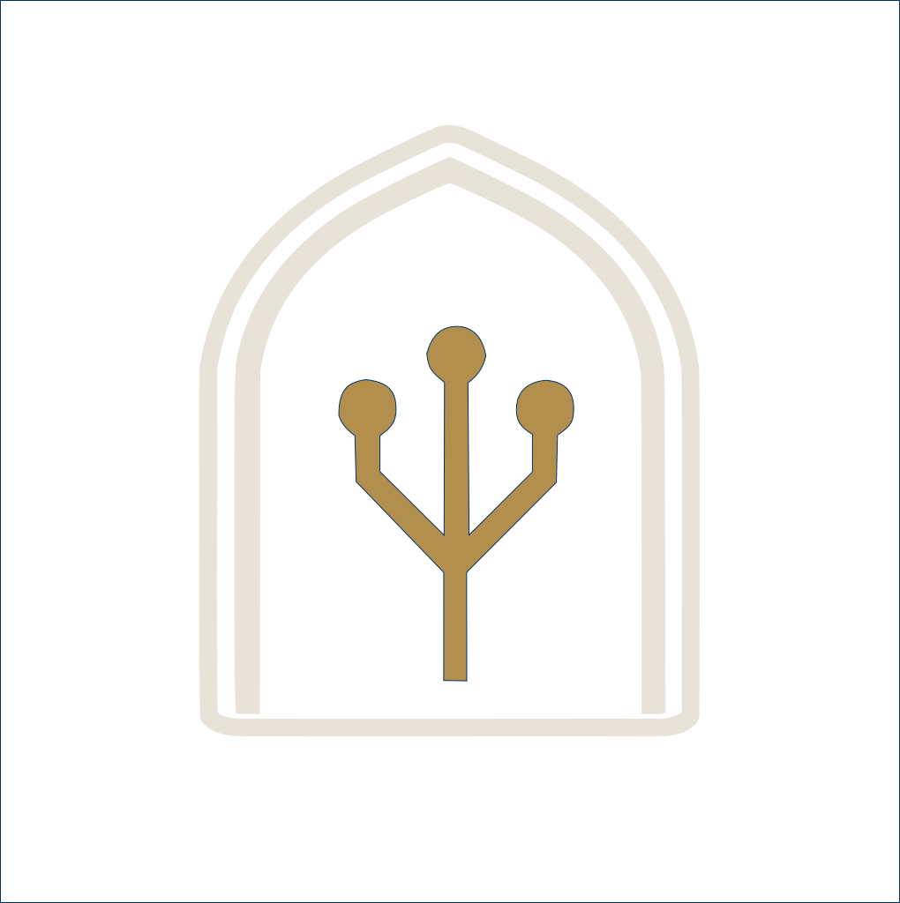

<!-- Sidebar -->
<aside class="sidebar" id="sidebar">
    <div class="sidebar__avatar">
        
        <div class="sidebar__avatar-dot"></div>
    </div>
    <nav class="sidebar__nav">
        <a href="index.html" class="sidebar__link" data-page="index">
            <svg class="sidebar__icon" viewBox="0 0 24 24" fill="none" stroke="currentColor" stroke-width="2">
                <path d="M3 9l9-7 9 7v11a2 2 0 01-2 2H5a2 2 0 01-2-2z"/>
                <polyline points="9 22 9 12 15 12 15 22"/>
            </svg>
        </a>
        <a href="about.html" class="sidebar__link" data-page="about">
            <svg class="sidebar__icon" viewBox="0 0 24 24" fill="none" stroke="currentColor" stroke-width="2">
                <path d="M20 21v-2a4 4 0 00-4-4H8a4 4 0 00-4 4v2"/>
                <circle cx="12" cy="7" r="4"/>
            </svg>
        </a>
        <a href="projects.html" class="sidebar__link" data-page="projects">
            <svg class="sidebar__icon" viewBox="0 0 24 24" fill="none" stroke="currentColor" stroke-width="2">
                <rect x="2" y="3" width="20" height="14" rx="2" ry="2"/>
                <line x1="8" y1="21" x2="16" y2="21"/>
                <line x1="12" y1="17" x2="12" y2="21"/>
            </svg>
        </a>
        <a href="contact.html" class="sidebar__link" data-page="contact">
            <svg class="sidebar__icon" viewBox="0 0 24 24" fill="none" stroke="currentColor" stroke-width="2">
                <path d="M4 4h16c1.1 0 2 .9 2 2v12c0 1.1-.9 2-2 2H4c-1.1 0-2-.9-2-2V6c0-1.1.9-2 2-2z"/>
                <polyline points="22,6 12,13 2,6"/>
            </svg>
        </a>
    </nav>
    <div class="sidebar__bottom">
        <button class="lang-toggle" id="langToggle" aria-label="Switch Language">
            <span class="lang-toggle__text">AR</span>
        </button>

        <button class="mode-toggle" id="modeToggle" aria-label="Toggle light/dark mode" data-tooltip="Light Mode" data-tooltip-ar="الوضع الفاتح">
            <svg class="mode-toggle__icon mode-toggle__icon--sun" viewBox="0 0 24 24" fill="none" stroke="currentColor" stroke-width="2">
                <circle cx="12" cy="12" r="5"/>
                <line x1="12" y1="1" x2="12" y2="3"/>
                <line x1="12" y1="21" x2="12" y2="23"/>
                <line x1="4.22" y1="4.22" x2="5.64" y2="5.64"/>
                <line x1="18.36" y1="18.36" x2="19.78" y2="19.78"/>
                <line x1="1" y1="12" x2="3" y2="12"/>
                <line x1="21" y1="12" x2="23" y2="12"/>
                <line x1="4.22" y1="19.78" x2="5.64" y2="18.36"/>
                <line x1="18.36" y1="5.64" x2="19.78" y2="4.22"/>
            </svg>
            <svg class="mode-toggle__icon mode-toggle__icon--moon" viewBox="0 0 24 24" fill="none" stroke="currentColor" stroke-width="2">
                <path d="M21 12.79A9 9 0 1111.21 3 7 7 0 0021 12.79z"/>
            </svg>
        </button>
    </div>
</aside>

<!-- Top Bar -->
<header class="topbar" id="topbar">
    <a href="#" class="topbar__resume-btn" download>
        <svg width="16" height="16" viewBox="0 0 24 24" fill="none" stroke="currentColor" stroke-width="2">
            <path d="M21 15v4a2 2 0 01-2 2H5a2 2 0 01-2-2v-4"/>
            <polyline points="7 10 12 15 17 10"/>
            <line x1="12" y1="15" x2="12" y2="3"/>
        </svg>
        <span>Resume</span>
    </a>

    <nav class="topbar__nav">
        <a href="index.html" class="topbar__nav-link" data-page="index">...</a>
        <a href="about.html" class="topbar__nav-link" data-page="about">...</a>
        <a href="projects.html" class="topbar__nav-link" data-page="projects">...</a>
        <a href="contact.html" class="topbar__nav-link" data-page="contact">...</a>
    </nav>

    <a href="index.html" class="topbar__brand" data-en="Omniah Arafah" data-ar="أمنية عرفة" aria-label="Omniah Arafah Home">
        <span class="topbar__brand-name" data-en="Omniah Arafah" data-ar="أمنية عرفة">Omniah Arafah</span>
        
    </a>
    
</header>

<!-- Mobile Nav -->
 <nav class="mobile-nav" id="mobileNav">
        <a href="index.html" class="mobile-nav__link" data-page="index"><svg viewBox="0 0 24 24" fill="none" stroke="currentColor" stroke-width="2"><path d="M3 9l9-7 9 7v11a2 2 0 01-2 2H5a2 2 0 01-2-2z"/><polyline points="9 22 9 12 15 12 15 22"/></svg></a>
        <a href="about.html" class="mobile-nav__link" data-page="about"><svg viewBox="0 0 24 24" fill="none" stroke="currentColor" stroke-width="2"><path d="M20 21v-2a4 4 0 00-4-4H8a4 4 0 00-4 4v2"/><circle cx="12" cy="7" r="4"/></svg></a>
        <a href="projects.html" class="mobile-nav__link" data-page="projects"><svg viewBox="0 0 24 24" fill="none" stroke="currentColor" stroke-width="2"><rect x="2" y="3" width="20" height="14" rx="2" ry="2"/><line x1="8" y1="21" x2="16" y2="21"/><line x1="12" y1="17" x2="12" y2="21"/></svg></a>
        <a href="contact.html" class="mobile-nav__link active" data-page="contact"><svg viewBox="0 0 24 24" fill="none" stroke="currentColor" stroke-width="2"><path d="M4 4h16c1.1 0 2 .9 2 2v12c0 1.1-.9 2-2 2H4c-1.1 0-2-.9-2-2V6c0-1.1.9-2 2-2z"/><polyline points="22,6 12,13 2,6"/></svg></a>
</nav>
